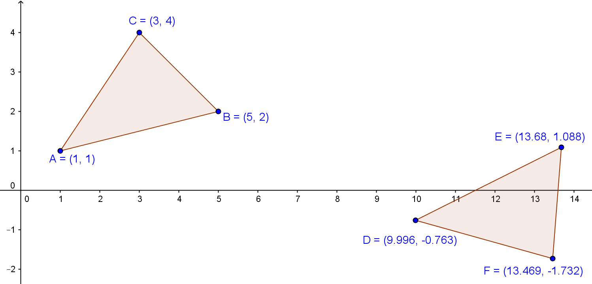
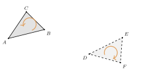
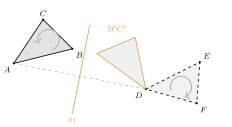
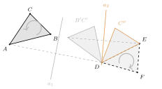
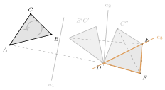

Aufgabe 4.1
- Wie viele Spiegelungen sind notwendig, um ein Dreieck $ABC$ in
der nachfolgenden Zeichnung auf seinen kongruenten Partner $DEF$
abzubilden?
\[A\mapsto D,\;\;B\mapsto E,\;\;C\mapsto F\]
Führen Sie die Spiegelungen in GeoGebra aus.

- Finden Sie eine Strategie die für alle Dreiecke funktioniert? Wieviele Spiegelungen sind dann maximal notwendig?
Womit anfangen? Vergleichen Sie die beiden Dreiecke, bevor Sie eine Achse zeichnen.
- In welchem Sinn läuft $A \to B \to C$, in welchem $D \to E \to F$?
- Was macht eine einzelne Spiegelung mit dem Umlaufsinn?
- Welche Achse bringt einen bestimmten Punkt genau auf einen anderen?
Gegeben: $A(1|1)$, $B(5|2)$, $C(3|4)$ und das kongruente Dreieck $D(10|{-}0.76)$, $E(13.68|1.09)$, $F(13.47|{-}1.73)$.
Schritt 1: den Umlaufsinn ansehen

$A \to B \to C$ läuft im Gegenuhrzeigersinn, $D \to E \to F$ im Uhrzeigersinn — die Pfeile zeigen es. Der Umlaufsinn ist also umgekehrt, und weil jede Spiegelung ihn umdreht, muss die Anzahl ungerade sein.
Mehr sagt der Umlaufsinn nicht. Er schliesst zwei Spiegelungen aus, aber zwischen einer und dreien entscheidet er nicht — das muss die Konstruktion zeigen.
Schritt 2: $A$ auf $D$ spiegeln

Welche Achse: die Mittelsenkrechte $a_1$ von $\overline{AD}$ — sie ist die einzige Gerade, an der $A$ nach $D$ fällt. Danach liegt schon ein Punkt richtig; $B$ und $C$ wandern mit nach $B'$ und $C'$.
Schritt 3: $B'$ auf $E$ spiegeln

Welche Achse: die Mittelsenkrechte $a_2$ von $\overline{B'E}$. Das Entscheidende ist, dass sie durch $D$ geht: Weil $|DB'| = |AB| = |DE|$ ist, liegt $D$ von beiden Punkten gleich weit entfernt — und die Mittelsenkrechte ist genau der Ort dieser Punkte. Der zweite Schritt zerstört den ersten also nicht.
Schritt 4: $C''$ auf $F$ spiegeln

Welche Achse: die Gerade $a_3$ durch $D$ und $E$. Wieder bleiben die schon gesetzten Punkte liegen, denn beide liegen auf der Achse. Und $C''$ muss auf $F$ fallen: Beide haben von $D$ und von $E$ dieselben Abstände, also gibt es nur zwei mögliche Lagen — eine auf jeder Seite von $a_3$ — und die Spiegelung tauscht sie.
Die Strategie für jedes Dreieck
- Mittelsenkrechte von $\overline{AD}$: bringt $A$ auf $D$.
- Mittelsenkrechte von $\overline{B'E}$: bringt $B'$ auf $E$, und $D$ bleibt liegen.
- Gerade durch $D$ und $E$: bringt $C''$ auf $F$, und $D$, $E$ bleiben liegen.
Im Video: Etappe 2 · Dreispiegelungssatz bei 1:42